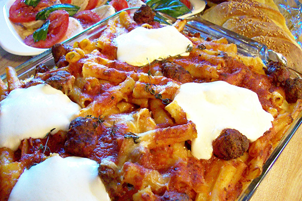

Carmella Soprano's Ziti al Frono

Best homemade ziti in the world!
Carmella Sopranos's famous ziti is everyone's favorite.
Imagine Tony Soprano standing in front of the microwave, drooling for the ziti!
Ingredients
- 1 pound ziti
- Salt
- Carm's special gravy made with litte meatballs
- 1 cup freshy grated Pecorino Romano
- 1 cup ricotta
- 8 ounces Mozarella, cut into small dice
Steps
- Bring at least 4 quarts of water to a boil in a large pot. Add the ziti and salt to taste. Cook,
stirring frequently, until the ziti is al dente, tender yet firm to the bite.
- Meanwhile, remove the meats, including the meatballs, from the gravy. Set the pork, veal, and
sausage aside for the second course, or for another meal.
- Drain the ziti and put it in a large bowl. Toss it with about 3 cups of the gravy and half the
grated cheese. Stir in the meatballs.
- Preheat the oven to 350°F.
- Spoon half the ziti into a shallow 3 1/2-quart baking dish. Spread the ricotta on top and
sprinkle with the mozzarella and half of the remaining grated cheese. Pour on 1 cup of the sauce.
Top with the remaining ziti and another cup of sauce. Sprinkle with the remaining grated cheese.
Cover the dish with foil. (The ziti can be refrigerated for several hours, or overnight, at this point.
Remove from the refrigerator about 30 minutes before baking.)
- Bake the ziti for 45 minutes. Uncover and bake for 15 to 30 minutes longer, or until the center
is hot and the sauce is bubbling around the edges. Cover and let stand for 15 minutes before
serving.
Back to home